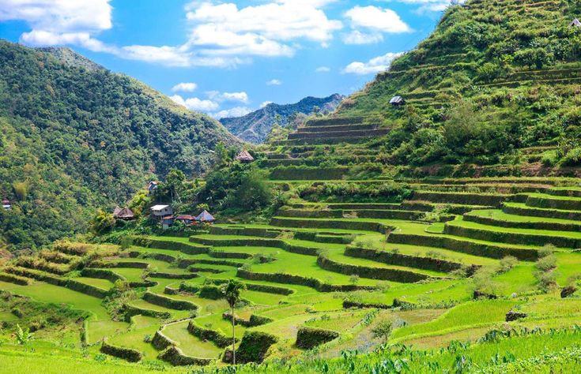
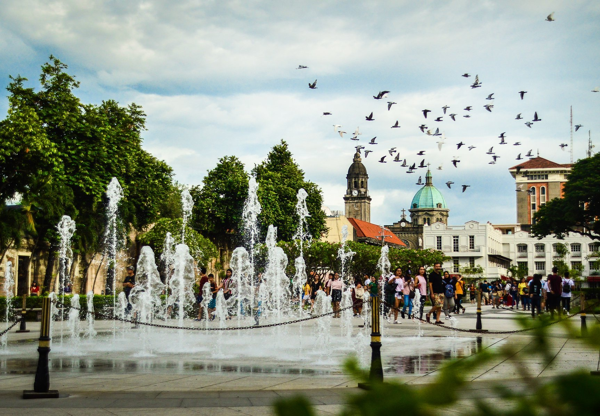
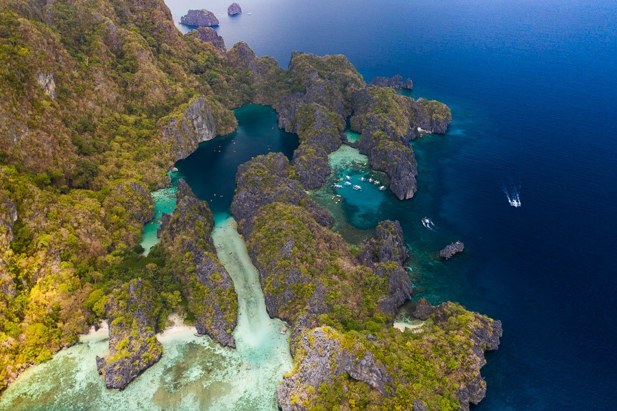
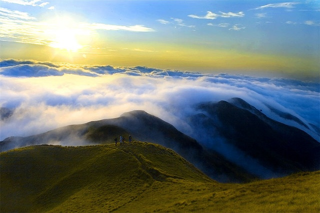
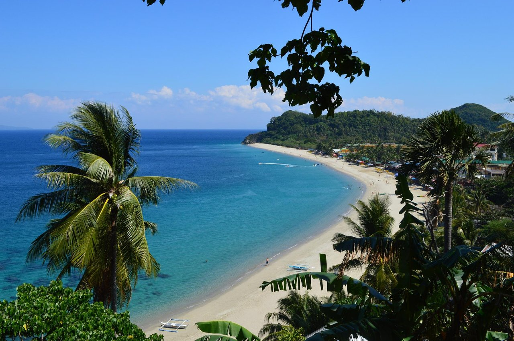
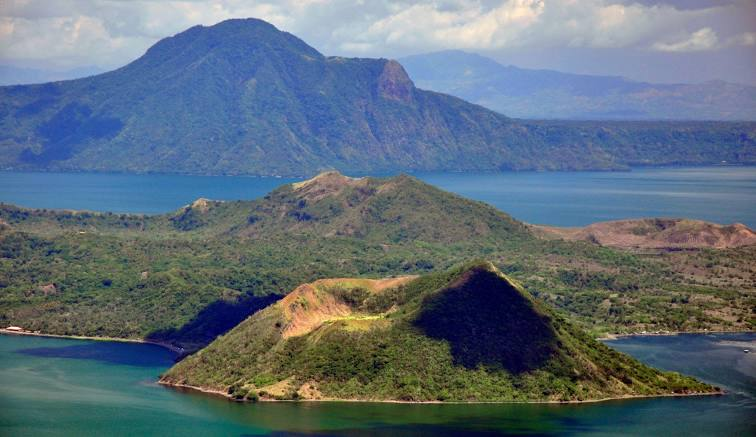
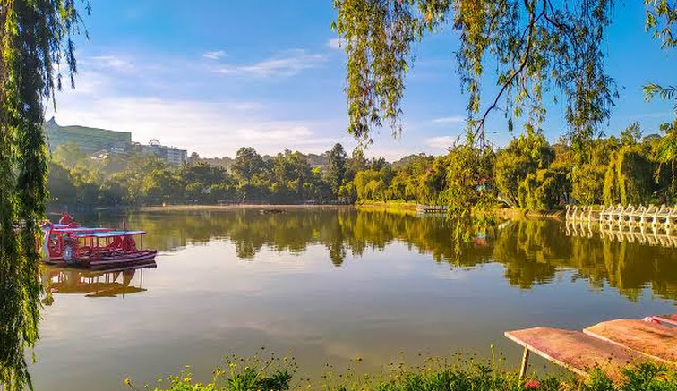

Luzon, the largest and most populous island in the Philippines, is a treasure trove of breathtaking landscapes, rich cultural heritage, and vibrant cities. From pristine beaches to towering mountains, Luzon offers a diverse range of experiences for every traveler. Here are 10 popular places in Luzon that you must visit:
Banaue Rice Terraces: Ancient Marvel of the Philippines
Nestled in the heart of the Philippines, the Banaue Rice Terraces stand as a remarkable testament to ancient engineering and cultural heritage. Carved into the mountainsides over 2,000 years ago by the Ifugao people, these terraces are often dubbed the "Eighth Wonder of the World." The terraces offer visitors a mesmerizing panorama of greenery that changes with the seasons, providing breathtaking views that captivate travelers from around the globe. Designated as a UNESCO World Heritage Site, the terraces are recognized for their cultural significance and are protected to ensure their preservation for future generations.
Beyond their scenic beauty, the Banaue Rice Terraces offer numerous opportunities for adventure and cultural immersion. Visitors can explore the terraces through trekking, learning about the ancient agricultural techniques and traditions of the Ifugao people. Additionally, homestay experiences provide a unique opportunity to immerse oneself in Ifugao culture, fostering meaningful connections with the local community. Efforts to promote sustainable tourism are underway, ensuring that the natural beauty and cultural integrity of the terraces remain preserved while offering visitors a chance to experience this ancient marvel firsthand.
Puerto Princesa Underground River: Nature's Subterranean Masterpiece

Nestled within the stunning landscapes of Palawan in the Philippines, the Puerto Princesa Underground River is a true wonder of the natural world. This captivating river flows through a vast limestone cave system, creating an otherworldly experience for visitors.
Designated as a UNESCO World Heritage Site and one of the New7Wonders of Nature, the underground river draws travelers from far and wide to marvel at its beauty and unique ecosystem.
Exploring the river begins with a mesmerizing boat ride along its dark waters, guided by skilled local boatmen who navigate through the eerie darkness. As you venture deeper into the cave, you'll encounter breathtaking rock formations, including stalactites and stalagmites, illuminated by the soft glow of your boat's lamp.
What makes this experience truly special is the diverse wildlife that inhabits the cave, including unique species of bats and birds. The underground river is home to a rich ecosystem, with many species found nowhere else on Earth.
The Puerto Princesa Underground River offers more than just a journey through natural beauty; it's a chance to connect with the raw power and wonder of the natural world. As you glide through the darkness, surrounded by ancient rock formations and the calls of unseen creatures, you'll be left with a deep sense of awe and appreciation for this incredible natural treasure.
Intramuros: A Glimpse into Manila's Colonial Past
Intramuros, meaning "within the walls" in Spanish, is a captivating district in the heart of Manila, Philippines. Enclosed by fortified walls, this historic enclave preserves the remnants of Manila's colonial past, offering visitors a glimpse into centuries of history.
Built by the Spanish in the 16th century, Intramuros was the seat of political, religious, and cultural power during the Spanish colonial era. Today, it stands as a living museum, filled with cobblestone streets, ancient churches, and well-preserved Spanish colonial architecture.
A stroll through Intramuros is like stepping back in time. Visitors can explore iconic landmarks such as Fort Santiago, a military fortress turned historical park where Dr. Jose Rizal, a national hero, was imprisoned before his execution. The Manila Cathedral, a grand structure with intricate architecture and rich history, is another must-see destination within Intramuros.
Walking along the streets of Intramuros, one can't help but be enchanted by the atmosphere. Horse-drawn carriages known as kalesas clip-clop through the cobblestone streets, offering visitors a leisurely tour of the district's historic sites.
Intramuros isn't just about the past; it's a vibrant neighborhood where history meets contemporary life. Amidst the colonial-era buildings, visitors can find charming cafes, art galleries, and cultural centers, showcasing the modern side of Filipino culture.
Whether you're interested in history, architecture, or simply soaking up the ambiance of a bygone era, Intramuros has something for everyone. It's a place where the past comes alive, leaving visitors with a deeper appreciation for Manila's rich and diverse heritage.
Big Lagoon, El Nido: Nature's Majestic Masterpiece
Big Lagoon is a mesmerizing natural wonder nestled within the breathtaking landscapes of El Nido in the Philippines. This enchanting lagoon, known for its crystal-clear turquoise waters and towering limestone cliffs, is a paradise for nature lovers and adventure seekers alike.
Accessible only by boat, the journey to Big Lagoon is an adventure in itself. As you glide through the emerald waters, surrounded by towering limestone formations, you'll be captivated by the sheer beauty of the surroundings.
Upon reaching Big Lagoon, you'll be greeted by a scene straight out of a postcard. The lagoon is surrounded by towering karst cliffs covered in lush greenery, creating a serene and picturesque oasis. The water is so clear that you can see all the way to the bottom, where colorful marine life thrives amidst the coral reefs.
One of the best ways to experience Big Lagoon is by kayaking through its calm waters. Paddle through hidden coves and narrow passages, exploring every nook and cranny of this natural wonder. As you navigate through the labyrinth of limestone cliffs, you'll feel like you've entered a secret world untouched by time.
For those who prefer to stay on land, there are plenty of opportunities for snorkeling and swimming in the crystal-clear waters of the lagoon. Dive beneath the surface and discover a vibrant underwater world teeming with tropical fish, colorful corals, and other marine creatures.
Whether you're seeking adventure or simply looking to relax and unwind in a stunning natural setting, Big Lagoon has something for everyone. It's a place where the beauty of nature takes center stage, leaving visitors with memories that will last a lifetime.
Vayayang Rolling Hills, Batanes: Where Nature Paints Its Own Masterpiece

In the northernmost province of the Philippines lies a hidden gem of unparalleled beauty the Vayang Rolling Hills in Batanes. Known for its breathtaking vistas of lush green hills rolling into the horizon and overlooking the vast expanse of the Pacific Ocean, this landscape is a painter's dream and a traveler's paradise.
Perched on the island of Batan, the Vayang Rolling Hills offer visitors a serene escape from the hustle and bustle of modern life. As you stand atop one of the verdant hills, you'll be treated to panoramic views of undulating terrain dotted with grazing cows and bordered by dramatic cliffs plunging into the azure sea.
Exploring the Vayang Rolling Hills is an adventure in itself. Visitors can embark on leisurely hikes along the rolling pathways, pausing along the way to take in the stunning scenery and snap photos of the breathtaking vistas. The cool, refreshing breeze and the sound of waves crashing against the cliffs create a sense of peace and tranquility that is hard to find elsewhere.
The best time to visit the Vayang Rolling Hills is during the golden hours of sunrise or sunset when the landscape is bathed in a warm, ethereal light, casting long shadows across the hills and painting the sky in hues of orange and pink.
Whether you're an avid photographer, a nature lover, or simply someone in search of a place to reconnect with the beauty of the natural world, the Vayang Rolling Hills in Batanes is a destination that promises to leave a lasting impression. It's a place where time seems to stand still, and every moment is a reminder of the sheer wonder and majesty of the world around us.
Mayon Volcano: The Majestic Beauty of Albay

Rising proudly on the island of Luzon in the Philippines, Mayon Volcano is a symbol of both beauty and danger. With its perfectly symmetrical cone shape and lush green surroundings, Mayon is often referred to as the "perfect cone" and is one of the most iconic natural landmarks in the Philippines.
But beyond its stunning appearance, Mayon holds a rich cultural and geological significance. Legends abound among the locals, with one of the most popular being the tragic tale of Daragang Magayon, which translates to "Beautiful Lady." According to the legend, Magayon was a beautiful maiden who fell in love with a warrior named Panganoron. Their love story, filled with intrigue and tragedy, is said to be the reason behind the volcano's name.
Visiting Mayon offers travelers a unique blend of adventure and awe-inspiring natural beauty. The volcano is surrounded by lush forests, rivers, and picturesque towns, providing plenty of opportunities for outdoor activities such as hiking, camping, and bird watching.
For the more adventurous, trekking to Mayon's summit offers a once-in-a-lifetime experience. The challenging climb rewards intrepid hikers with panoramic views of the surrounding landscape and a sense of accomplishment like no other.
Even for those who prefer to admire Mayon from a distance, the views are nothing short of spectacular. Whether seen from the coastal town of Legazpi or from the air as you fly into nearby airports, the sight of Mayon's majestic cone against the backdrop of the Philippine sky is truly unforgettable.
Mt. Pulag: The Roof of Luzon
Standing proudly as the third-highest peak in the Philippines, Mount Pulag is a majestic mountain located in the Cordillera Central range on the island of Luzon. Renowned for its stunning sea of clouds and breathtaking sunrise views, Mount Pulag is a favorite destination among adventurers and nature enthusiasts.
What sets Mount Pulag apart is its unique ecosystem, which includes several distinct vegetation zones. The lower slopes are covered in dense mossy forests, home to a variety of flora and fauna, including the endemic dwarf bamboo. As you ascend, the landscape transitions into pine forests, with towering trees providing shade along the trail. Finally, above the treeline, hikers are greeted by the grassland summit, where the iconic sea of clouds often blankets the surrounding valleys.
The highlight of any Mount Pulag adventure is the sunrise summit. As dawn breaks, the sky erupts into a symphony of colors, casting a golden glow over the sea of clouds below. It's a moment of pure magic and serenity that leaves hikers in awe of the beauty of nature.
Due to its high elevation and unique ecosystem, Mount Pulag is a protected area and designated as a National Park. Visitors are required to secure permits before embarking on their trek, and camping is only allowed in designated areas. These conservation efforts help preserve the pristine beauty of Mount Pulag for future generations to enjoy.
Whether you're an experienced mountaineer or a casual hiker, a trek to the summit of Mount Pulag is an adventure of a lifetime. It's a chance to immerse yourself in the stunning landscapes of the Philippine highlands and witness the awe-inspiring beauty of the Roof of Luzon
Puerto Galera: When Adventure meets Pradise
Nestled along the northern coast of Mindoro Island in the Philippines, Puerto Galera is a tropical paradise renowned for its pristine beaches, vibrant coral reefs, and lush rainforests. Just a few hours away from Manila, it's a popular destination for both local and international travelers seeking sun, sea, and adventure.
Puerto Galera boasts some of the most beautiful beaches in the Philippines. White Beach is the most famous, known for its powdery white sand and clear turquoise waters. Sabang Beach, on the other hand, is popular among divers and nightlife enthusiasts. For those seeking a more secluded retreat, Talipanan Beach and Aninuan Beach offer tranquility and stunning views.
Divers flock to Puerto Galera for its rich marine biodiversity. The area is home to over 40 dive sites, including colorful coral gardens, dramatic drop-offs, and fascinating underwater caves. From vibrant coral reefs teeming with tropical fish to encounters with sharks and turtles, there's something for divers of all levels.
Explore the nearby islands and coves on a thrilling island-hopping adventure. Visit the stunning landscapes of Haligi Beach, swim in the crystal-clear waters of Bayanan Beach, or snorkel among the vibrant coral reefs of Coral Garden.
Adrenaline junkies will find plenty of excitement in Puerto Galera. Try your hand at windsurfing, kiteboarding, or parasailing, or rent a kayak and paddle along the coast to discover hidden coves and pristine beaches.
Taal Volcano: A Majestic Crater Within a Crater
Taal Volcano is a geological wonder located in Batangas province, Philippines. Known as the smallest active volcano in the world, Taal's unique beauty and geological significance draw visitors from far and wide. At the heart of Taal Volcano lies its iconic Crater Lake. Formed within the main crater, this shimmering body of water adds to the volcano's mystique. Visitors can take a boat ride across the lake to explore the volcanic island within, which is itself a volcano within a lake within a volcano—a rare phenomenon known as a "nested caldera." Trekking to the rim of Taal's main crater offers panoramic views of the surrounding landscape. The trek typically starts in the town of Talisay, where visitors can hire a local guide and ride on horseback up the steep trails. As you ascend, you'll be treated to breathtaking vistas of the lush greenery below and the expansive vista of the volcanic island in the crater lake.
Bagiuo: The City of Pines and Cool Breezes
Nestled high in the Cordillera Mountains of northern Luzon, Baguio City, often referred to as the "Summer Capital of the Philippines," is a charming retreat known for its refreshing climate, lush pine forests, and vibrant cultural scene.
Escape the heat of the lowlands and enjoy the cool, crisp air of Baguio. Thanks to its high elevation, the city enjoys a mild climate year-round, making it a popular destination for both locals and tourists seeking respite from the tropical heat.
Baguio's picturesque surroundings offer plenty of opportunities for outdoor recreation and relaxation. Take a leisurely stroll along the scenic Burnham Park, paddle a boat across its tranquil lake, or have a picnic amidst the pine trees. For more adventurous souls, hiking trails such as those in Mount Costa and Mount Yangbew provide stunning views of the city and surrounding mountains.
Indulge your taste buds with Baguio's famous strawberries and other fresh produce. Visit the La Trinidad Strawberry Farm to pick your own strawberries or sample delicious strawberry-based treats at the Baguio Public Market. Don't forget to try other local delicacies such as Baguio longganisa (sausage) and ube (purple yam) jam.
Baguio is home to several beautiful parks and gardens. The Botanical Garden showcases a variety of indigenous plants and is a popular spot for picnics and relaxation. The Wright Park offers horseback riding amidst a backdrop of towering pine trees, while the Mines View Park provides panoramic views of abandoned mines and the surrounding mountains.